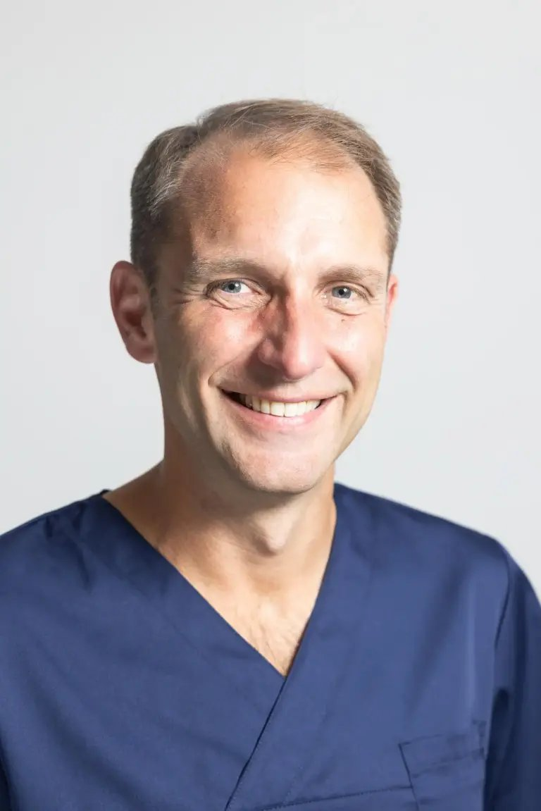
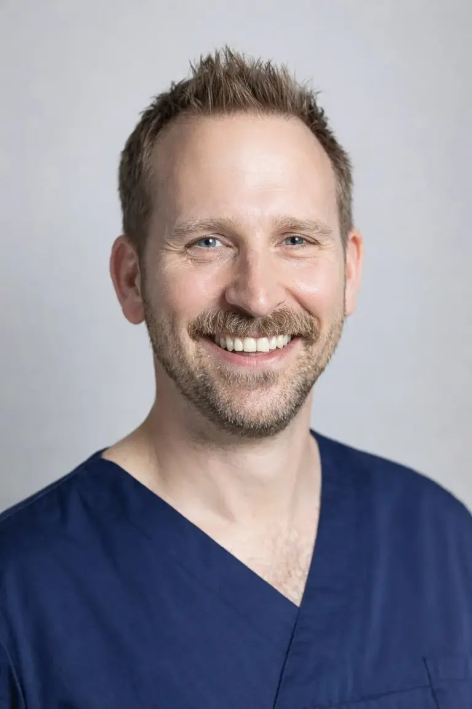

Medizinische Hautbehandlung · Bequem bei Ihnen zu Hause
Professionelle Faltenbehandlung mit Botulinumtoxin — durchgeführt von zwei approbierten Anästhesisten, direkt bei Ihnen zu Hause. Medizinische Präzision, natürliche Ergebnisse, ganz ohne Praxisbesuch.
Wer wir sind
Wir glauben, dass eine Behandlung in einer vertrauten, entspannten Umgebung besser ist — für Sie und für das Ergebnis. Deshalb kommen wir zu Ihnen. Kein steriles Wartezimmer, kein Termindruck, keine Begegnungen, die Sie lieber vermeiden.
Dr. Tackenberg und Dr. Wiedemann sind praktizierende Anästhesisten. Sie bringen klinische Präzision direkt in Ihr Zuhause — diskret, pünktlich und vollständig ausgestattet.
Dr. Tackenberg & Dr. Wiedemann
Der Hausbesuch
Wir kommen mit allem, was wir brauchen — Sie müssen nichts vorbereiten. Ein ruhiges Zimmer, ein bequemer Platz, und wir kümmern uns um den Rest.
Der Hausbesuch ist kein Kompromiss — er ist unser Konzept. Weil wir überzeugt sind, dass Wohlbefinden und Vertrauen die besten Voraussetzungen für ein schönes Ergebnis sind.
So funktioniert esJede Behandlung wird individuell auf Ihr Gesicht und Ihre Ziele abgestimmt — direkt bei Ihnen zu Hause.
Was unsere Patientinnen sagen
Der Hausbesuch hat alles verändert — ich hätte nie gedacht, dass es so entspannt sein kann. Kein Wartezimmer, kein Stress. Dr. Tackenberg hat sich so viel Zeit genommen, das Ergebnis ist wunderschön natürlich.
Dass sie direkt zu mir nach Hause kommen ist für mich das Entscheidende. Dr. Wiedemann hat sich so viel Zeit für das Gespräch genommen — ich hatte nie das Gefühl, einfach nur eine Patientin zu sein.
Das Ergebnis ist genau das, was ich mir erhofft hatte — ausgeruht, natürlich, nicht übertrieben. Und der Hausbesuch war so unkompliziert. Ich komme definitiv wieder.
Unsere Ärzte
Jede Behandlung wird von einem approbierten Facharzt für Anästhesiologie durchgeführt — direkt bei Ihnen zu Hause.

Anästhesist · Mitgründer
Facharzt für Anästhesiologie
Dr. Tackenberg bringt jahrelange klinische Erfahrung in jeden Hausbesuch ein. Sein tiefes Wissen über Gesichtsanatomie und Patientenphysiologie bedeutet, dass die Behandlungen nicht nur wirksam, sondern auch sicher und präzise platziert sind.

Anästhesist · Mitgründer
Facharzt für Anästhesiologie
Dr. Wiedemanns Hintergrund in der Anästhesiologie verleiht ihm ein besonders feines Gespür dafür, wie der Körper auf Behandlungen reagiert. Ruhig, gründlich und aufrichtig interessiert an natürlichen Ergebnissen — er hört zuerst zu.
Buchen Sie Ihren Hausbesuch in Nordrhein-Westfalen. Erstpatienten sind herzlich eingeladen, vorab ein kostenloses Beratungsgespräch zu vereinbaren.